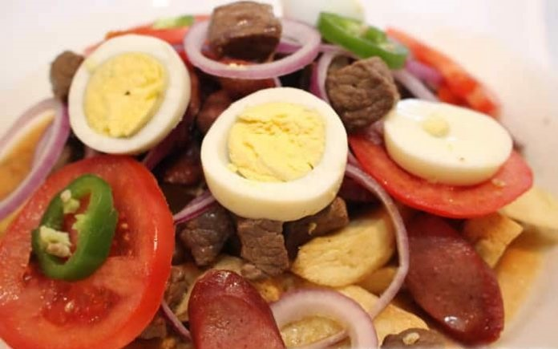

Pique Macho

Description
This is a yummy recipe from Bolivia. It is very simple to prepare but it tastes amazing.
My mother always prepares this dish for me on my birthday.
Ingredients
- 1 Kilo of soft meat
- ½ kilo of sausages
- 10 medium potatoes
- 4 large onions
- 2 medium tomatoes
- 3 locotos or chili peppers
- oil
- ground pepper
- ground cumin
- minced garlic
- salt
Steps
- Cut the meat into small pieces and season with salt, garlic, pepper and cumin to taste.
- Chop the locoto or chili peppers into strips and sauté in the pan with a little hot oil,
with the finely chopped onion, the diced tomato and a pinch of salt.
- In another pan, fry the meat and the sliced sausages, cover the pan to obtain a juicy meat.
- Cut the potatoes into strips and fry them in oil.
- Mix everything together and add the fried potatoes.
- Serve garnished with pieces of chopped raw locoto, onions and sliced tomatoes.
- To make it a pique criollo you can add cheese slices and sliced hard-boiled eggs.
Recipe credits and image:
https://gastronomiabolivia.com/pique-macho/
Back to recipes